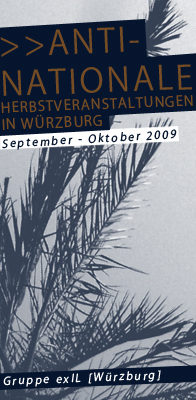

|
Umfassende Analysen des globalen Kapitalismus haben wieder Konjunktur, und mit ihnen kommt auch der zwischenzeitlich totgesagte Karl Marx wieder zu unverhofften Ehren. Was ist eigentlich Kapitalismus, und was hat es mit der ominösen Dialektik auf sich? Wie entsteht Mehrwert? Was ist Fetischismus, und wie verhält es sich mit Politik und Staat? Diesen und anderen Fragen wollen wir in den zwei Tagen anhand von Textenpassagen nachgehen. >>26./27. September 2009 / Uhrzeit wird noch bekannt gegeben >>Herr Pfeffer/Büttnerstr.13 >>10€/Tag / Anmeldung unter: infoladenwuerzburg [at] yahoo.com oder über das Kontaktformular |

|
Nationalismus ist die unumwundene Identifizierung mit dem je eigenen Staat. Der Nationalismus ist eine notwendige Ideologie für all jene, die sich nicht in ein kritisches Verhältnis zu Staat und Kapital setzen. Als bekennender Nationalist sieht sich das Subjekt in einem permanenten Zweifrontenkrieg gegen die vermeintlich Überwertigen und die Minderwertigen. Gegen erstere richtet sich der Antisemitismus, gegen letztere der Rassismus. Der israelische Nationalismus ist die Verteidigung gegen diesen Mechanismus nationaler Vergesellschaftung. Er ist die Reaktion auf den nationalen Wahn und insbesondere auf die deutsche Ideologie mit ihren massenmörderischen Konsequenzen. Der Zionismus als jüdischer Nationalismus ist nach Lage der Dinge die bis heute einzig mögliche Antwort auf die nationalistische Raserei, die gerade im Antisemitismus zu sich findet.
Stephan Grigat ist Lehrbeauftragter für Politikwissenschaft an der Universität Wien, hat die Initiative Café Critique mitbegründet und arbeitet als wissenschaftlicher Berater für die Kampagne „Stop the Bomb“ in Österreich. Er ist Autor von „Fetisch und Freiheit. Über die Rezeption der Marxschen Fetischkritik, die Emanzipation von Staat und Kapital und die Kritik des Antisemitismus“ (ça ira 2007), Herausgeber von „Feindaufklärung und Reeducation. Kritische Theorie gegen Postnazismus und Islamismus“ (ça ira 2006) und Mitherausgeber von „Der Iran – Analyse einer islamischen Diktatur und ihrer europäischen Förderer“ (Studienverlag 2008). >>07. Oktober 2009 / 19 Uhr |

|
Anna, eine junge Frau, wird am frühen Morgen von zwei Frauen aus dem Bett gerissen. Sie dringen in ihre Wohnung ein, durchstöbern ihre Sachen, treiben sie zur Eile und mokieren sich über ihre Ahnungslosigkeit. Schließlich wird klar, daß sie Anna – wie wohl jeden Morgen – zur Arbeit „verhaften“. Bei Der stumme Zwang handelt es sich um einen Kurzfilm, der auf surreale, kafkaeske Weise allegorisch den internalisierten Zwang sichtbar zu machen sucht, der die Menschen zur Arbeit treibt. Er enthält einen spielfilmischen sowie einen dokumentarischen Teil, die beide nur lose miteinander verknüpft sind, aber dennoch unbedingt zusammengehören. >> 13. Oktober 2009/19 Uhr |
Hinweis: Auf den Flyern ist versehentlich eine falsche Emailadresse angegeben. Bitte Anmeldungen, Fragen und Kritik an infoladenwuerzburg[at]yahoo.com
Banner_1:

Banner_2: